Eigenfaces¶
The problem with the image representation we are given is its high dimensionality. Two-dimensional 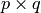 grayscale images span a 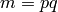-dimensional vector space, so an image with 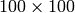 pixels lies in a 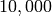-dimensional image space already. The question is: Are all dimensions equally useful for us? We can only make a decision if there’s any variance in data, so what we are looking for are the components that account for most of the information. The Principal Component Analysis (PCA) was independently proposed by Karl Pearson (1901) and Harold Hotelling (1933) to turn a set of possibly correlated variables into a smaller set of uncorrelated variables. The idea is, that a high-dimensional dataset is often described by correlated variables and therefore only a few meaningful dimensions account for most of the information. The PCA method finds the directions with the greatest variance in the data, called principal components.
Algorithmic Description¶
Let 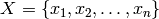 be a random vector with observations 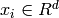.
- Compute the mean 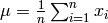
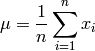
- Compute the the Covariance Matrix S
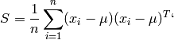
- Compute the eigenvalues 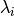 and eigenvectors
 of 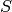
of 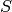
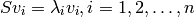
- Order the eigenvectors descending by their eigenvalue. The 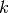 principal components are the eigenvectors corresponding to the largest eigenvalues.
The principal components of the observed vector 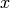 are then given by:

where 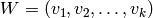. The reconstruction from the PCA basis is given by:
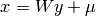
OpenCV¶
#include "opencv2/opencv.hpp"
#include "opencv2/highgui/highgui.hpp"
#include <iostream>
#include <fstream>
#include <sstream>
#include "facerec.hpp"
using namespace cv;
using namespace std;
void read_csv(const string& filename, vector<Mat>& images, vector<int>& labels, char separator = ';') {
std::ifstream file(filename.c_str(), ifstream::in);
if (!file)
throw std::exception();
string line, path, classlabel;
while (getline(file, line)) {
stringstream liness(line);
getline(liness, path, separator);
getline(liness, classlabel);
images.push_back(imread(path,0));
labels.push_back(atoi(classlabel.c_str()));
}
}
int main(int argc, const char *argv[]) {
// check for command line arguments
if (argc != 2) {
cout << "usage: " << argv[0] << " <csv.ext>" << endl;
exit(1);
}
// path to your CSV
string fn_csv = string(argv[1]);
// images and corresponding labels
vector<Mat> images;
vector<int> labels;
// read in the data
try {
read_csv(fn_csv, images, labels);
} catch (exception& e) {
cerr << "Error opening file \"" << fn_csv << "\"." << endl;
exit(1);
}
// get width and height
int width = images[0].cols;
int height = images[0].rows;
// get test instances
Mat testSample = images[images.size() - 1];
int testLabel = labels[labels.size() - 1];
// ... and delete last element
images.pop_back();
labels.pop_back();
// build the Fisherfaces model
Eigenfaces model(images, labels);
// test model
int predicted = model.predict(testSample);
cout << "predicted class = " << predicted << endl;
cout << "actual class = " << testLabel << endl;
// get the eigenvectors
Mat W = model.eigenvectors();
// show first 10 fisherfaces
for (int i = 0; i < min(10, W.cols); i++) {
// get eigenvector #i
Mat ev = W.col(i).clone();
// reshape to original site
Mat grayscale = toGrayscale(ev.reshape(1, height));
// show image (with Jet colormap)
imshow(num2str(i), grayscale, colormap::Jet());
}
waitKey(0);
return 0;
}